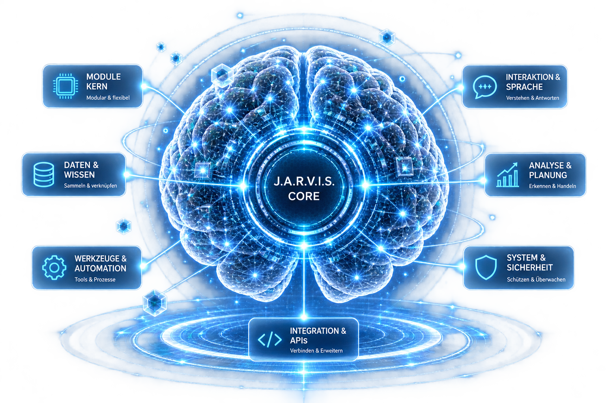

J.A.R.V.I.S. PROJECT
How J.A.R.V.I.S. is really built.
- MODULES
- 11 documented
- GROUPS
- 4 areas
- IN PROGRESS
- 3 threads
- STATUS
- Active development

STATUS
Active development
CURRENT FOCUS
Network structure / Collective Knowledge
LATEST MAJOR DEVELOPMENT
Network endpoint connected / research path working
ARCHITECTURE
What is J.A.R.V.I.S. made of?
THINKING & REMEMBERING
PERCEIVING & COMMUNICATING
ACTING & RESEARCHING
AGENTS
When answers alone aren't enough anymore.
See the agents →
RESEARCH
When J.A.R.V.I.S. doesn't know something, he should be able to look it up.
See the research →
BROWSER
Using the web itself.
See the browser →
TOOLS
The connection between thinking and doing.
See the tools →
AUTOMATION
Not doing a task just once.
See the automation →
IN PROGRESS
Currently in development
J.A.R.V.I.S. NETWORK
The local J.A.R.V.I.S. can be reached through the Network path. The current focus is on the Network's structure.
COLLECTIVE KNOWLEDGE
Observations, experiments and discussions are getting fixed, real subject-matter connections.
LOCAL AI
Model quality and its limits remain an ongoing experiment.
HONEST HISTORY